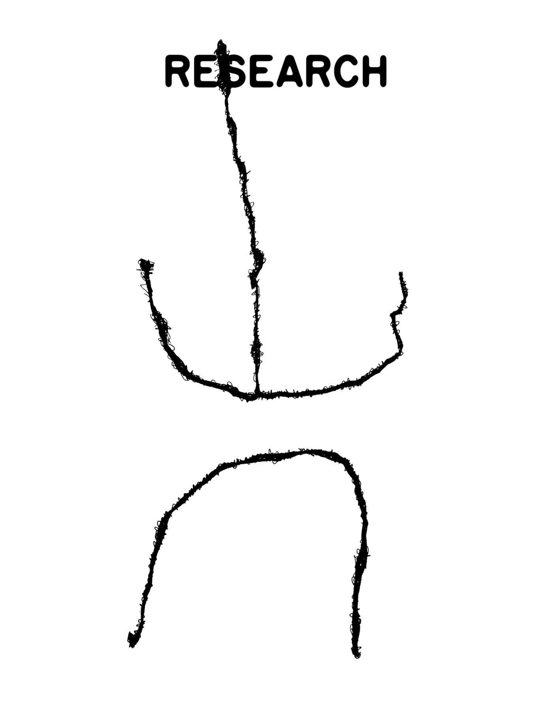

I study how people make places, and make themselves visible in them, under militarization, borders, and tourism.
The method is ethnographic and practice-based. Principal sites are Gangjeong Village on Jeju Island, and the US–Mexico borderlands, where Pepe Rojo and I have followed the Magonista Tierra y Libertad flag since 2016.
저는 사람들이 군사화, 국경, 관광 속에서 어떻게 장소를 만들고, 그 안에서 스스로를 드러내는지 연구합니다.
연구 방법은 민족지적이며 실천에 기반합니다. 주요 현장은 제주도 강정마을, 그리고 Pepe Rojo와 제가 2016년부터 마고니스타의 Tierra y Libertad 깃발을 따라온 미국–멕시코 접경지역입니다.
militarization · counter-mapping · visual culture · tactical media · film theory · transnational Korean studies
군사화 · 대항지도제작 · 시각문화 · 전술적 미디어 · 영화이론 · 초국가적 한국학